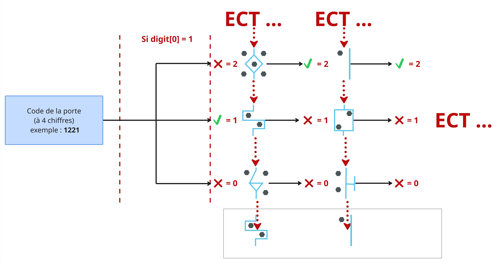
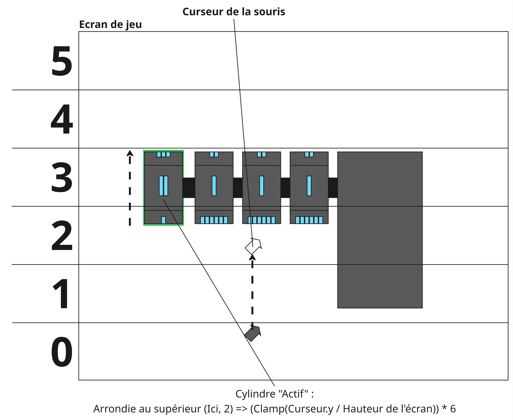

Operator est mon 2ème projet de seconde année à l'ICAN fait sur Unity.
C'est un jeu d'exploration et de gestion en point & click sur PC qui se joue donc uniquement à la souris.
Pitch
Incarner un opérateur qui guide trois aventuriers dans un laboratoire en ruine plongé dans les ténebres.
Vous seul pourrez guider et aider les aventuriers a se déplacer dans ce dédale afin de trouver et décrypter 5 symboles antiques pour reconstruire un ancien systeme d’énergie renouvelable.
Rôle : Game Programmer
Taille de l'équipe: 4
Temps de conception: 4 mois
Moteur: Unity
L'équipe
Milo Bezombes / Chef de Projet, Game Designer, Narrative Designer, Doubleur
Killian Fontaine / Game Programmer, Game Design
Yann-Ronan Le pennec / Game Artist 3D, Level Designer, Doubleur
Jade Shan / Sound Designer, Game Artist 2D
Le système de fréquence
Le système de fréquence est assez simple à comprendre.
Chaques aventuriers à une fréquence qu'il lui ai assigné au début de la scène.
Sur la radio grâce au slide de la souris, on incrémente ou décrémente la valeur pour obtenir la fréquence actuelle du joueur et on vérifie simplement si la fréquence correspond à celle d'un des aventuriers.
Si c'est le cas, on met un booléen en "true", et ce booléen est essentiel au fonctionnement du système car sans elle beaucoup de modules qui nécessite d'être sur la fréquence de l'aventurier et tout simplement bloqué.
Le système de Module


Pour résumer
Ce projet bien qu'il ne me satisfait guère dans son game design et dans sa globalité m'a appris beaucoup de choses comme trouver de la complaisance dans le fait de simplement
s’améliorer sur des aspects ou encore par l’architecture ou l’énergie déployé dans un projet plutôt que le rendu en tant que tel ce qui permet de générer de la motivation même
sur des projet qui ne me plait pas, ou encore sur ma façon de faire des scripts plus organisés en pensant à ceux qui passeront derrière moi, plus digeste, mieux ranger,
communiquer les avancées faites en programmation, etc…